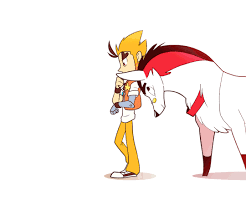
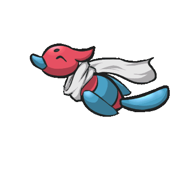
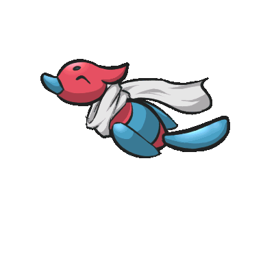
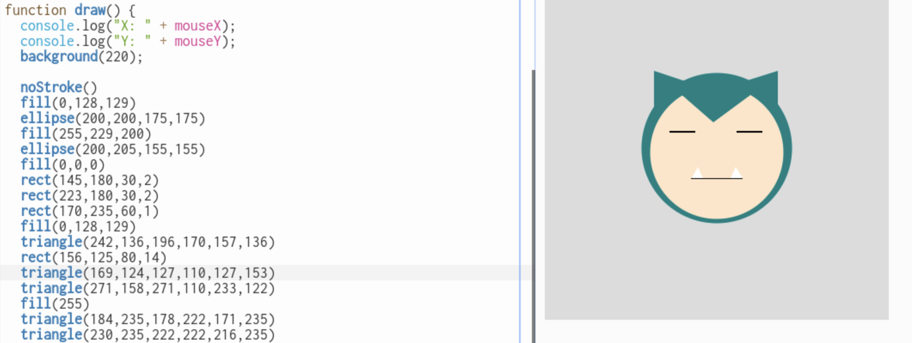
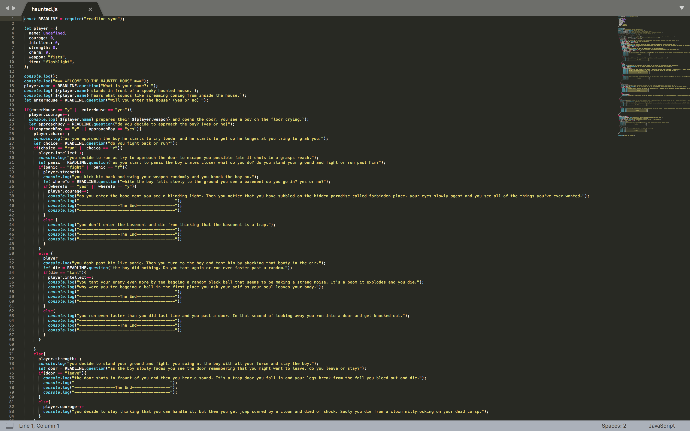
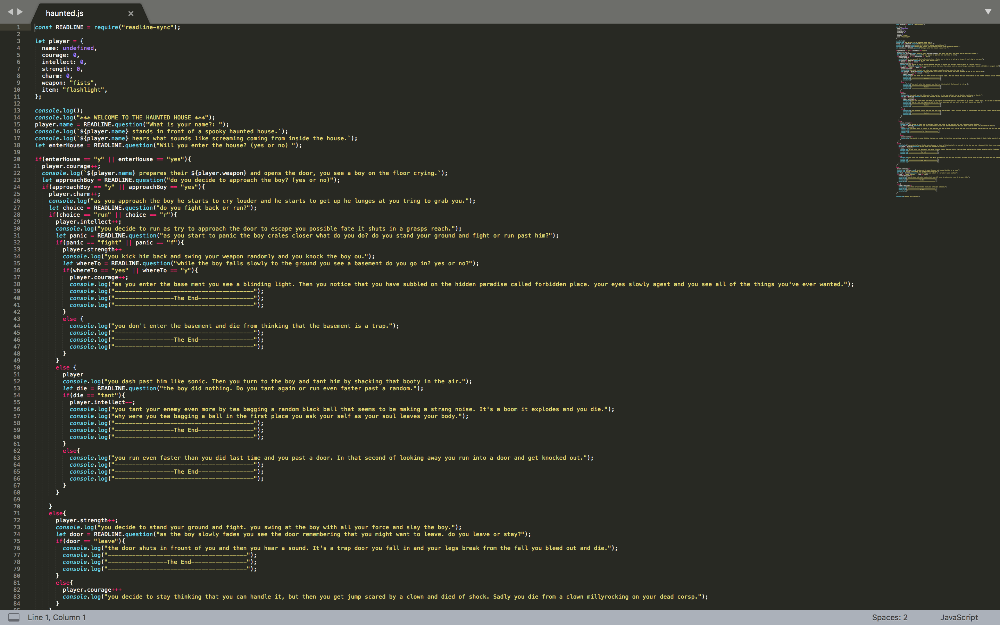

I am the Ceo of a small tutoring program I made a websit with my sister for our business.
I work mondays and tuesdays tutoring 8th and 7th grade.
I am currently a 9th greader and I take earth sci and geometry and so far I am doing good in all my classies but, spainish because Devauntea and spainsh just doesn't mix not like I have any thing agenst spaish peole or the langusge It's just not my thing. recently I took midterms wtich is the bain of my existence. I love to code because the first day I was introduced to it I got instantly hooked sometimes I adicted to coding like it's a drug (btw I don't do drugs) .
these images represent my love for games, pokemon, memes, and anime.
 

I love Code next bceause they have given me the greatest experience so far.
They have taught me how to code. They also have given me info on how to get an internship at google and other info on how to get into other coding programes. Code Next has also provide me and other with summer programs. Also thanks to my Favorit middle school I was able to attend many UNICEF trips. That middle School allowed me to get accepted to Code Next.
This is a picture of the first thing that I ever coded Thanks to the astence of my friend/couch Iedress
my favorit project that I have done in Code Next is the haunted.js project that I worked on. It's the longest project that I ever worked on. Also I put all of my effert in that project and It's my favorit project because I learned how to organise my projests more when I worked on it. I was taught how to use TAB to keep things in my project linked together like a chain. What made this project so fun for me is I was able to be myself.
you probley can't see it but this is a picture of mario farting. Just kidding! As you can see the picture to the right is my Haunted.js project which is my longest project so far.
 

you can find them on
O